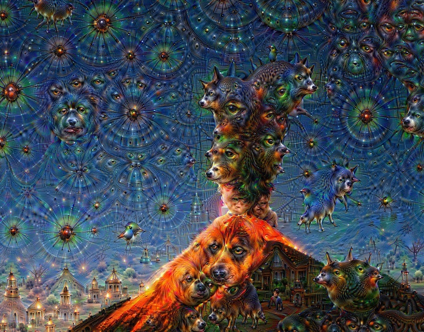

author: niplav, created: 2025-05-30, modified: 2025-10-28, language: english, status: notes, importance: 7, confidence: likely
An unstructured, unfinished braindump.
People love to talk about whether AI misalignment is even a problem, probably by one order of magnitude. Unrelatedly, the main AI alignment plan of the major AI companies is (if they have one) to use mildly superhuman AIs to solve (parts of?) the alignment problem. Whether and how such plans could be made to work is underdiscussed by 1½ orders ot magnitude. But like with the meta-problem of consciousness, we can probably learn something about the difficulty if we attempt to turn the issue of solving AI alignment into executable philosophy. Here's some random stabs.
The most detailed analyses are Joshua Clymer's writing on automating alignment research, and Joe Carlsmith's high-level overview. At this point most AI alignment organizations are working under the assumption of having large amount of AI labour available in a critical period. Coordinal is directly tackling the problem of using AIs for alignment.
RIP to superalignment.
More:
When we create scaffolds for/train/create training environments for automated AI alignment researchers, what is the type signature of the outputs of those researchers?
There are different perspectives on this.
Are there natural problems with a negative generator-verifier gap? How common are they?
Related:
The story goes like this: People used to believe that advanced AIs would take your instructions literally, and turn the entire universe into paperclips if you instructed them to create you a paperclip factory. But if you ask current LLMs, they tell you they won't turn the entire universe into a paperclip factory just because you expressed a weak desire to use some bent metal to bring order to your government forms. Thus, the original argument (the "Value Misspecification Argument") is wrong and the people who believed it should at least stop believing it).
Here's a different story: Advanced AI systems are going to be optimizers. They are going to be optimizing something. What would that something be? There are two possibilities: (1) They are going to optimize a function of their world model1, or (2) they are going to optimize a function of the sensors. (See Dewey 2010 on this.). Furthermore, so goes the assumption, they will be goal-guarding: They will take actions to prevent the target of their optimization from being changed. At some point then an AI will fix its goal in place. This goal will be to either optimize some function of its world model, or of its sensors. In the case (1) it will want to keep that goal, so for instrumental purposes it may continue improving its world model as it becomes more capable, but keep a copy of the old world model as a referent for what it truly values. In the case (2) it will simply have to keep the sensors.
What happens if an AI optimizes a function of its world model? Well, there's precedent. DeepDream images were created by finding maximizing activations for neurons in the ConvNet Inception trained on ImageNet. These are some of the results:



So, even if you've solved the inner alignment problem, and you get some representation of human values into your AI, if it goal-guards and then ramps up its optimization power, the result will probably look like the DeepDream dogs, but for Helpfulness, Harmlessness and Honesty. I believe we once called this problem of finding a function that is safe to optimize the "outer alignment problem", but most people seem to have forgotten about this, or believe it's a solved problem. I don't quite see why they believe that.
One could argue that current LLM representations of human values are robust to strong optimization, or that they will be robust to strong optimization at the time when AIs are capable of taking over. I think that's probably wrong, because (1) LLMs have many more degrees of freedom in their internal representations than e.g. Inception, so the resulting optimized outputs are going to look even stranger, and (2) I don't think humans have yet found any function that's safe and useful to optimize, so I don't think it's going to be "in the training data".
If an advanced AI optimizes some functions of its sensors that is usually called wireheading or reward tampering or the problem of inducing environmental goals, and it doesn't lead to an AI sitting in the corner being helpless, but probably like trying to agentically create an expanding protective shell around some register in a computer somewhere.
This argument fails if (1) advanced AIs are not optimizers, (2) AIs are not goal-guarding, (3) or representations can't be easily extracted for later optimization.
What could the DeepDream dogs equivalent of helpfulness, harmlessness and honesty look like? Probably quite strange.
Clymer 2025 suggests to train AIs that imitate human alignment researchers.
Clymer suggests a method of checking AI systems by letting them replicate the output of the AI alignment community from a specific period; excluding training data from that period from the training data, and then checking if the automated alignment researchers make similar findings to the alignment community. This method is quite powerful, as it replicates the progress made by the entire research field, including interactions between researchers. But it also requires extensive cleaning of the training data, interventions in the training process, and consists only of a single data-point, replicating "fads" researchers get infatuated by.
In smaller-scale experiments, Clymer isn't as clear about the procedure. There are two variants, namely whether one trains against alignment researcher feedback or trains against alignment researcher behavior.
Training against alignment researcher feedback: An alignment researcher formulates a task (i.e. an experiment, a conceptual question &c). The AI model generates an output to solve the task. The researcher then samples and observes the output, and then grades the results according to how much they liked the output of the AI model with respect to the task. The model is trained on that feedback.
Training against alignment researcher behavior: An alignment researcher formulates a task. The AI model, as in the previous case, tries to solve the task and produces some output . For some tasks, the alignment researcher separately tries to solve the task themselves, and produces some output , without any access to . A third person (which could be a different AI model, or another researcher) then goes over and and grades the AI model on how similar is to .
Training against alignment researcher behavior is much more bona-fide imitation learning, whereas training against alignment researcher feedback is much more similar in spirit to e.g. RLHF.
Very likely its weights or activations. ↩